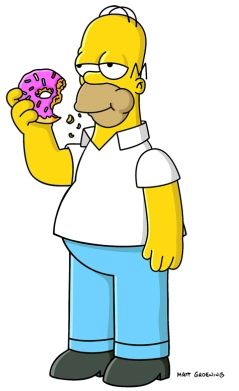

Homer Simpson
Homer Jay Simpson (born May 12, 1951)[36] is the main protagonist of The Simpsons series (or show). He is the spouse of Marge Simpson and father of Bart, Lisa and Maggie Simpson. Homer is overweight (said to be ~240 pounds), lazy, and often ignorant to the world around him. Although Homer has many flaws, he has shown to have great caring, love, and even bravery to those he cares about and, sometimes, even others he doesn't. He also serves as the main protagonist of the The Simpsons Movie. He is 39 years old and was born in 1951.
- D'oh!
- Why you little...!
- Woo-hoo!
Bart Simpson

Bartholomew JoJo "Bart" Simpson (born April 1[7] or February 23[8]) is the Deuteragonist of The Simpsons. Bart is the mischievous, rebellious, misunderstood, disruptive and "potentially dangerous" oldest child. He is the only son of Homer and Marge Simpson, and the older brother of Lisa and Maggie. He also has been nicknamed "Cosmo", after discovering a comet in "Bart's Comet". Bart has also been on the cover on numerous comics, such as "Critical Hit", "Simpsons Treasure Trove #11", and "Winter Wingding".
- Ay Caramba!
- Eat my shorts!
- I didn't do it!
Lisa Simpson

Lisa Marie Simpson (born May 9)[9] is the elder daughter and middle child of the Simpson family and one of the two tritagonists (along with Marge,) of The Simpsons series. In "Homer and Lisa Exchange Cross Words" she is also known as Lisa Bouvier. She was named after a train called Lil' Lisa on her parents' 1st anniversary.
- Bart!
- If anyone wants me, I'll be in my room
- Quit it, Bart!